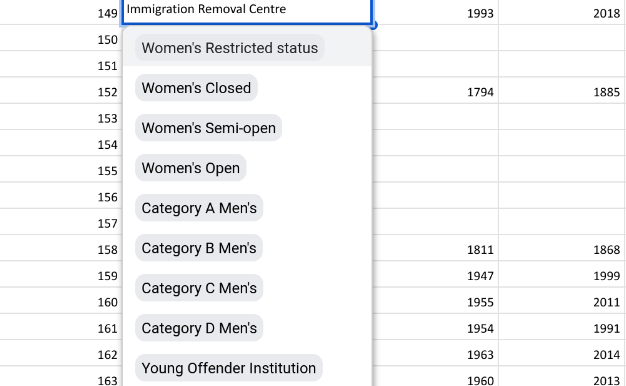
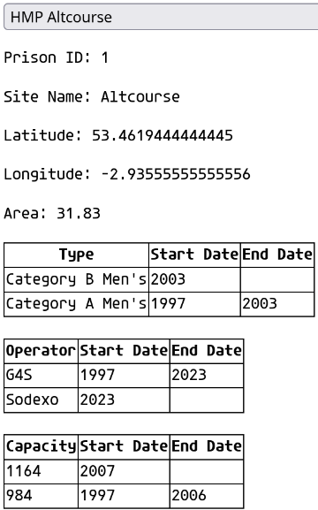

In which I complain about spreadsheets, normalize a database, then make another spreadsheet
Published
2024-03-14
This post might count as a confession. I always complain about spreadsheets, and that the more ornate you make them the more brittle they are. Here’s how I’ve made a pretty complicated spreadsheet, and why I did it. This is quite a long one, and if you aren’t interested in hearing why I don’t think spreadsheets are the best solution to the problems they are applied to at great length, maybe give this one a miss. If you want to read some of my thought process approaching a problem, and about my gifts as a cheapskate, then please continue.
The Data
I’m working with a friend who’s a sociologist on an interactive map of UK prisons. In a previous step, I scraped Wikipedia for the coordinates of each listed prison and put a dot on the map for each one. My friend also sent me a spreadsheet with a lot more information about prisons, including some that are closed. He’s also interested in immigration detention, so there’s information about removal centres etc. in there.
Let’s look at the spreadsheet:
Show the code
import pandas as pdtom_df = pd.read_excel("data/Prison database.xlsb.xlsx", sheet_name="eprison")tom_df.dropna(axis=1, how='all', inplace=True)tom_df.drop(['Column1', *['Column'+str(i) for i inrange(3,10)]], axis =1, inplace=True)tom_df['Name'] = tom_df['Name'].str.title().str.replace(' Sch', ' SCH')tom_df.head()
Prison Name
Name
Area
Type
Operator
Opened
Operational Capacity
Closed
Notes
0
ALDINE SCH
Aldine
NaN
Secure Children's Home
NaN
NaN
NaN
NaN
NaN
1
ATKINSON UNIT SCH
Atkinson Unit SCH
NaN
Secure Children's Home
NaN
NaN
NaN
NaN
NaN
2
AYCLIFFE SCH
Aycliffe SCH
NaN
Secure Children's Home
NaN
NaN
NaN
NaN
NaN
3
BARTON MOSS SCH
Barton Moss SCH
NaN
Secure Children's Home
NaN
NaN
NaN
NaN
NaN
4
BEECHFIELD SCH
Beechfield SCH
NaN
Secure Children's Home
NaN
NaN
NaN
NaN
NaN
So there are some more columns here, like the prison type and capacity. I’ll merge this with my coordinate data. Then I’ll make the prison names a bit more pleasant to read by first making them title case, rather than ALL CAPS, and then make the initialisms (“SCH” for Secure Children’s Home etc.) uppercase.
This is the first issue. Some columns, including the Operational Capacity, contain multiple pieces of data. The problem, of course, is that the prisons can change over time. I did try to parse this1 and keep the structure, but the underlying problem is that a single table is insufficient to deal with the nature of prisons over time.
A better data model
To get things in a more reasonable format, let’s use the concept of a data model. This will let us think about what aspects of a prison we really want to capture. Here are the facts:
More than one prison can have existed on one site (e.g. HMP Fosse Way was built on the site of HMP Glen Parva)
A prison can change capacity over time. A new wing can be added, or another closed.
A prison can change operator over time. Some have been turned over to private operators, others go from being a prison to some kind of immigration detention centre and back again.
A prison can change type over time. The classification of prisoner security can change, or the age or gender of inmates can change
This means we can represent our data like this:
erDiagram
SITES ||--o{ PRISONS : contains
SITES {
int site_id
string site_name
float latitude
float longitude
float area
}
PRISONS {
int prison_id
string prison_name
int site_id
}
PRISONS ||--o{ TYPES : has
TYPES {
int prison_id
string type
date start_date
date end_date
}
OPERATOR_DATES }o--|| PRISONS : operates
OPERATOR_DATES {
int operation_id
string operator
int prison_id
date start_date
date end_date
}
PRISONS ||--o{ CAPACITIES : has
CAPACITIES {
int capacity_id
int prison_id
int operational_capacity
date start_date
date end_date
}
Here we have split one table into multiple tables. This allows each prison to be represented once in the prisons table, and the ways each prison changes over time in different ways to be represented separately. In the “Types”, “Operator Dates”, and “Capacities” tables, the prison_id field means you can relate each entry to a prison.
This way of representing the data scratches an itch in my brain. In data terms, this is called a “data schema”. The original data was sort of in one too, if not consistently. This particular schema is quite simple, and known as a star schema. In this terminology, the prisons table is a fact table, and the others are dimension tables. I could further split these up so the dimension tables had further dimensions off these, but I think for this relatively small dataset, this is sufficient.
Using the star schema we can capture the ways a prison can change over time independently (even if changes often occur together) in a reliable way.
Data wrangling
So how do we move from the “flat” table in the spreadsheet to the star schema?
Sites table
The first thing to do is to make an entry for each site. In the current data, there are only two prisons that share a site, but I suspect as data is added we may well find more.
I also did a simple bit of data cleaning here. The area column was given as a string with “X hectares”. As each entry was given in hectares, I’ve removed that and made it a number.
Prisons table
The central table of the schema is pretty simple. All I’ve done here is take the prison name, added a column to generate a prison ID for the rest of the tables, then joined it with the sites table so we can find the site it was built on.
There’s no data in the original about how the types changed over time, exept sporadically in notes. For example, HMP Morton Hall has changed type at least five times since 1985, but this isn’t captured. For now, I’m just taking the type provided and pretending that has been the type for the history of the prison. In a later stage, the histories will be captured more fully. I’ll also restrict the possible values for type, as there are defined types a prison can have, and the type column in the spreadsheet isn’t consistent with this. For now, this will do.
Operator table
This one isn’t hard either, and just needs a bit of cleaning
The main thing here is that whether the prison was privately or publicly owned was included in the column. I’ve removed this, then have done some tidying. I later had to go through manually and correct some spelling mistakes. Some stuff is easier not to bother programming in.
This presents an opportunity to show the strengths of making a more complex schema. If we wanted to keep track whether a prison was privately or publicly operated, we could add another table to the model to represent this.
erDiagram
SITES ||--o{ PRISONS : contains
SITES {
int site_id
string site_name
float latitude
float longitude
float area
}
PRISONS {
int prison_id
string prison_name
int site_id
}
PRISONS ||--o{ TYPES : has
TYPES {
int prison_id
string type
date start_date
date end_date
}
OPERATOR_DATES }o--|| PRISONS : operates
OPERATOR_DATES {
int operation_id
string operator
int prison_id
date start_date
date end_date
}
PRISONS ||--o{ CAPACITIES : has
CAPACITIES {
int capacity_id
int prison_id
int operational_capacity
date start_date
date end_date
}
OPERATOR_TYPE ||--o{ OPERATOR_DATES : public
OPERATOR_TYPE {
string operator
bool public
}
I’m not doing this for now, as there are not many operators and the purpose of the model doesn’t require it.
Capacity table
This might be the messiest one. We do have multiple pieces of data, as we’ve seen above. What I’m doing for now is pretending each prison hasn’t changed over time, and this is mostly because the dates provided are mostly when a capacity was recorded, not when the change happened. Unfortunately for my sociologist friend, this is going to mean a lot of digging and manual data entry, unless we find a new data source!
We have the data in the tables as required, with the relationships between tables established.
The ideal world
What we have here is a great case for using a relational database. Relational Database Management Systems are well-established pieces of software that make it easy for you to add entries to a system like this while maintaining data integrity, and have guard rails in place to stop you from doing something that breaks your system.
The real world
More important than protecting users from themselves, and providing a convenient interface is the ability to share it with my collaborator. There are free database hosting services, but these are mostly trials, and often involve learning a proprietary system. Then I have to set up administration so that my friend can edit it and protect it from vandals. Because I am both stupid and lazy, I’m going to use a stupid and lazy solution: another spreadsheet.
Back to a spreadsheet
Google sheets has the features I want - I can share it with my friend and Google handles authentication for me. I can mitigate some of the risks of using a spreadsheet by applying data validation rules. For example, as there are a limited set of options, I can restrict that column of the spreadsheet to only accept those options. Sheets also makes these into a snazzy drop-down menu:

I have also made it so it shouts at you if you try to duplicate entries by adding a prison twice or trying to reuse a prison ID, for example.
The difficulty comes with adding entries. Human beings aren’t made to remember that prison 157 is Hassockfield STC. This means that when you’re adding information about a prison, you would need to switch between sheets and check IDs all over the place.
Apps Script
Another feature Google Sheets offers is Apps Script. This is basically the possibility of using javascript to build your own extensions. The way this works is that you provide some code that runs in your sheet, and they provide an API for accessing the data in your sheet. Very clever people can use this to link together Google’s services and even build full web apps. This isn’t something I need to scale, so I’ve made a fairly minimal one, which is just a little sidebar that pops up and tells you about a prison you care about: 
This is something of a work in progress. If the requirements of the project change, I can make a full user interface, as the Sheets API supports modifying the spreadsheet.
Here’s the code if you want a look. It’s very much a hack, so I wouldn’t recommend it2.
<!DOCTYPE html>
<html>
<head>
<style>
table {
border-collapse: collapse;
border: 2 px solid black;
}
table td, table th {
border: 1px solid black;
}
</style>
</head>
<body>
<select id="prisonDropdown" onchange="changeID()">
<option value="">Select a Prison</option>
</select>
<div id="prisonID"></div>
<div id="siteInfo"></div>
<div id="typeInfo"></div>
<br>
<div id="operatorDatesInfo"></div>
<br>
<div id="capacitiesInfo"></div>
<script>
// Function to populate the dropdown with prison options
function populatePrisons(prisons) {
var dropdown = document.getElementById("prisonDropdown");
// Clear existing options
dropdown.innerHTML = "";
// Add options for each prison
prisons.forEach(function(prison) {
var option = document.createElement("option");
option.value = prison;
option.text = prison;
dropdown.appendChild(option);
});
}
// Function to handle error
function showError(error) {
console.error("Error:", error);
}
// Function to show site info for the selected prison
function changeID() {
var selectedPrison = document.getElementById("prisonDropdown").value;
google.script.run.withSuccessHandler(displayPrisonID)
.withFailureHandler(showError)
.getPrisonID(selectedPrison);
google.script.run.withSuccessHandler(displaySiteInfo)
.withFailureHandler(showError)
.getSiteInfoForPrison(selectedPrison);
}
function showInfo() {
var prisonID = parseInt(document.getElementById("prisonID").innerText.slice(11));
google.script.run.withSuccessHandler(displayTypeInfo)
.withFailureHandler(showError)
.getTypeInfoForPrison(prisonID);
google.script.run.withSuccessHandler(displayOperatorDates)
.withFailureHandler(showError)
.getOperatorDatesForPrison(prisonID);
google.script.run.withSuccessHandler(displayCapacities)
.withFailureHandler(showError)
.getCapacitiesForPrison(prisonID);
}
function displayPrisonID(prisonID) {
var prisonIDDiv = document.getElementById("prisonID");
prisonIDDiv.innerHTML = `<p>Prison ID: ${prisonID}</p>`;
// Trigger the showInfo function after updating the prisonID div
showInfo();
}
// Function to display site info in the "siteInfo" div
function displaySiteInfo(siteInfo) {
var siteInfoDiv = document.getElementById("siteInfo");
siteInfoDiv.innerHTML = `
<p>Site Name: ${siteInfo.siteName}</p>
<p>Latitude: ${siteInfo.latitude}</p>
<p>Longitude: ${siteInfo.longitude}</p>
<p>Area: ${siteInfo.area}</p>
`;
}
// Function to show type info in the "typeInfo" div
function displayTypeInfo(typeInfo) {
var typeInfoDiv = document.getElementById("typeInfo");
var tableHTML = "<table style=\"border: 1px solid black\"><tr><th>Type</th><th>Start Date</th><th>End Date</th></tr>";
typeInfo.forEach(function(type) {
tableHTML += `<tr><td>${type.type}</td><td>${type.start_date}</td><td>${type.end_date}</td></tr>`;
});
tableHTML += "</table>";
typeInfoDiv.innerHTML = tableHTML;
}
function displayOperatorDates(operatorDates) {
var operatorDatesInfoDiv = document.getElementById("operatorDatesInfo");
var tableHTML = "<table><tr><th>Operator</th><th>Start Date</th><th>End Date</th></tr>";
operatorDates.forEach(function(dateInfo) {
tableHTML += `<tr><td>${dateInfo.operator}</td><td>${dateInfo.start_date}</td><td>${dateInfo.end_date}</td></tr>`;
});
tableHTML += "</table>";
operatorDatesInfoDiv.innerHTML = tableHTML;
console.log(operatorDates);
}
function displayCapacities(capacites) {
var capacitesDiv = document.getElementById("capacitiesInfo");
var tableHTML = "<table><tr><th>Capacity</th><th>Start Date</th><th>End Date</th></tr>";
capacites.forEach(function(dateInfo) {
tableHTML += `<tr><td>${dateInfo.operationalCapacity}</td><td>${dateInfo.start_date}</td><td>${dateInfo.end_date}</td></tr>`;
});
tableHTML += "</table>";
capacitesDiv.innerHTML = tableHTML;
}
// Call the prisonOptions function in the Google Apps Script
// and populate the dropdown with the retrieved prison data
google.script.run.withSuccessHandler(populatePrisons)
.withFailureHandler(showError)
.prisonOptions();
</script>
</body>
</html>
Conclusion
So what is the takeaway here? Just use spreadsheets? No. I’m doing my best not to use the spreadsheet as a spreadsheet. I guess my conclusion here is that it’s hard to argue with free hosting where someone else handles security for you!
Footnotes
I used a horrible regular expression: ((,)?(>)?|(?:(,)? (?:Jan|Feb|Mar|Apr|May|Jun|Jul|Aug|Sep|Oct|Nov|Dec) )|(?:(,)? )) then used the dataframe’s explode method↩︎
particularly the bit where I don’t bother parsing the datetime format to read the year from cells, and use a regular expression instead↩︎